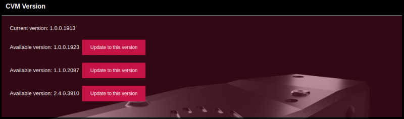
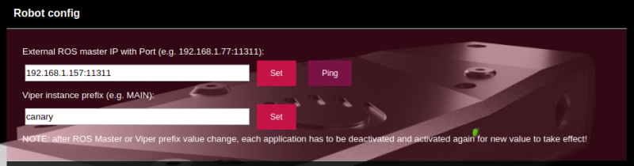
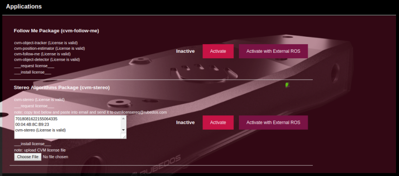
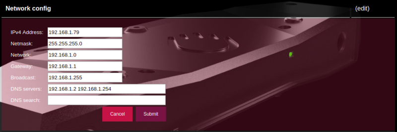

VIPER Configuration¶
VIPER can be configured in two ways:
- ROS dynamic reconfigure;
- VIPER Web panel.
ROS Dynamic Reconfigure¶
Since VIPER is based on ROS, all the nodes are configurable via dynamic_reconfigure. All parameters can be accessed via rqt dynamic reconfigure plugin.
VIPER Core Configuration¶
VIPER Core has the following nodes and parameters.
cvm_configurator¶
This node should be used to switch between different resolutions. It has several presets that are optimized for each resolution.
- preset
A set of parameters for certain resolutions
none No parameters are set by the node. Default.
preset1 resolution: 320x90, camera_rate: 60, read_framerate: 60, stereo_algorithm: StereoSGBM_VW, max_disparity: 64.
preset2 resolution: 640x180, camera_rate: 60, read_framerate: 60, stereo_algorithm: StereoSGBM_VW, max_disparity: 128.
preset3 resolution: 1280x360, camera_rate: 60, read_framerate: 20, stereo_algorithm: StereoSGBM_VW, max_disparity: 128.
preset4 resolution: 2560x720, camera_rate: 30, read_framerate: 8, stereo_algorithm: StereoSGBM_VW, max_disparity: 128.
cvm_description/parent_link¶
When the camera is attached to a robot it might be necessary to take it into account by describing the setup.
- parent_link
- Robot link to which camera is attached. If empty, transform is not published. Empty is default.
- rotation_r
- Roll relative to the parent link’s reference frame in degrees. Default: 0.0. Range: [-180.0; 180.0].
- rotation_p
- Pitch relative to the parent link’s reference frame in degrees. Default: 0.0. Range: [-180.0; 180.0].
- rotation_y
- Yaw relative to the parent link’s reference frame in degrees. Default: 0.0. Range: [-180.0; 180.0].
- position_x
- X translation relative to the parent link’s reference frame in meters. Default: 0.0. Range: [-100.0; 100.0].
- position_y
- Y translation relative to the parent link’s reference frame in meters. Default: 0.0. Range: [-100.0; 100.0].
- position_z
- Z translation relative to the parent link’s reference frame in meters. Default: 0.0. Range: [-100.0; 100.0].
cvm_description/cvm_ground_link¶
The ground is described relatively to VIPER’s center (cvm_base_link), using the following parameters. The transform can be used by the Obstacle Detector App
to adjust the detection of obstacles when the ground is not parallel to, or is located at VIPER’s center.
- rotation_r
- Roll relative to the cvm base link’s reference frame in degrees. Default: 0.0. Range: [-180.0; 180.0].
- rotation_p
- Pitch relative to the cvm base link’s reference frame in degrees. Default: 0.0. Range: [-180.0; 180.0].
- rotation_y
- Yaw relative to the cvm base link’s reference frame in degrees. Default: 0.0. Range: [-180.0; 180.0].
- position_x
- X translation relative to the cvm base link’s reference frame in meters. Default: 0.0. Range: [-100.0; 100.0].
- position_y
- Y translation relative to the cvm base link’s reference frame in meters. Default: 0.0. Range: [-100.0; 100.0].
- position_z
- Z translation relative to the cvm base link’s reference frame in meters. Default: 0.0. Range: [-100.0; 100.0].
cvm_v4l2_camera¶
- resolution
Camera resolution can be changed to the following values:
320x90 Resized from nHD.
640x180 Resized from nHD.
1280x360 Original nHD from camera driver. Default.
2560x720 Original HD from camera driver.
cvm_stereo/disparity_nodelet¶
- stereo_algorithm
Stereo matching algorithm. It affects accuracy of point clouds.
StereoSGBM_VW SGBM that comes from VisionWorks library. Slower and more robust than the other. Default.
StereoSGM_HZ Hernandez’s implementation of SGM. Faster, but it produces more noise.
FollowMe App Configuration¶
cvm_follow_me¶
- drop_time
- Time after which the target should be dropped if not seen, in seconds. Default: 5. Range: [0.2; 30].
- detection_prob
- Probability threshold to assume that the correct object class has been detected. Default: 0.25. Range: [0.0; 1.0].
- similarity_threshold
- Visual similarity of the object in the subsequent frame. Default: 0.6. Range: [0.0; 1.0].
- history_queue
- Queue size for storing visual data. If 0 then visual data is not compared. Default: 15. Range: [0; 100].
cvm_follow_me/cvm_object_detector¶
- camera_rotation
If camera has been rotated, correct parameter has to be set for human recognition to work. Camera rotation types:
0 default. Camera is in its regular position.
1 CW_90. Camera is rotated 90 degrees clock wise.
2 CCW_90. Camera is rotated 90 degrees counter clock wise.
FollowAruco App Configuration¶
Obstacle Detector App Configuration¶
cvm_laserscan¶
- target_frame
- If provided, transforms the point cloud into this frame before converting to a laser scan. If the target frame is set to the
cvm_ground_linkor another part that is parallel to the ground, laser scan will also be parallel to the ground. Empty is default, which means that by default laser scans are produced inleft_camera_link. - min_height
- The minimum height to sample in the point cloud in meters. Default: -1.0. Range: [-100.0; 100.0].
- max_height
- The maximum height to sample in the point cloud in meters. Default: 1.0. Range: [-100.0; 100.0].
- min_angle
- The minimum scan angle in degrees. Default: -30.0. Range: [-180.0; 180.0].
- max_angle
- The maximum scan angle in degrees. Default: 30.0. Range: [-180.0; 180.0].
- angle_increment
- Resolution of laser scan in degrees per ray. Default: 0.6. Range: [-180.0; 180.0].
- scan_time
- The rate at which laser scan is produced in seconds. This information does not change the output of the Obstacle Detector App. Some navigation planners take it into account. Default: 0.1. Range: [0.0; 1.0].
- min_range
- The minimum ranges to return in meters. Default: 1.0. Range: [0.0; 50.0].
- max_range
- The maximum ranges to return in meters. Default: 25.0. Range: [0.0; 50.0].
- use_inf
- If disabled, report infinite range (no obstacle) as
range_max+ 1. Otherwise report infinite range as+inf.Falseis default.
VIPER Web Panel¶
When you are connected to the same network as VIPER, you should be able to access VIPER Web panel by opening a browser and entering IP address of your VIPER.
Overview¶
In the picture below you can see what sections are available in VIPER web panel.
The following sections are available:
- CVM Version
- Robot config
- Applications
- System actions
- Network config
- System time
- System info

Note
Initially some sections are collapsed, and some are expanded - you can mouse click on heading and section will change between collapsed and expanded state.
CVM Version¶
In this section current CVM version is shown.
If VIPER is connected to the internet, it verifies if there is any newer version of CVM software. If newer CVM version is available - update action will be presented to the user.
Note
Version update, depending on internet connection speed, can take up to 30 minutes. Reload page after some time to verify if update has completed.
Robot Config¶
In this section Robot configuration parameters can be adjusted. This section is collapsed by default - mouse click on the heading and section will expand.
If VIPER is being used on the robot, these parameters should be adjusted accordingly.
Note
Viper prefix should contain value without spaces in the middle, also it cannot start with number.
Note
If any value changes in this section - applications should be restarted i.e. deactivate and activate every application that you use.
Applications¶
The list of applications is shown here.
For every application additional information is shown:
- application or package title e.g. Follow Me Package
- list of modules e.g. cvm-object-tracker, cvm-position-estimator etc.
- license status of each module e.g. License is valid
- license actions: request license and install license - click on these titles for more information to be shown
- application status: Active, Inactive, Active (on external ROS)
- actions: Activate, Activate with External ROS
Note
You will be asked to confirm your action before VIPER executes it.
In the picture below you can see what information and actions are available for license handling.
When you have new VIPER then most likely applications (some or all) will have no license installed. In this case, you have to send license request to the email address licensing@rubedos.com . In the body of license request email you have to include VIPER information (as shown in the picture - copy and paste from the web panel). Also, in the license request you have to include information about yourself and your organization.
After your license request is fulfilled, you will receive license files (one file or multiple files). Then you should upload these files into VIPER web panel by pressing install license then Choose file. After you execute this action, page will reload and application module license status will be updated.
Note
At any time do not forget to reload page to get the most current information about application status!
Note
If you are using robot setup i.e. camera is mounted on some kind of robot with its own computer running with ROS, and you activate application with external ROS, VIPER periodically (every 2 minutes) will check if external ROS is alive, and, if it is alive i.e. responding, then VIPER activates application (which previously was activated with external ROS). If VIPER detects that external ROS is not responding, then it deactivates application until next check is performed. Also, you can manually deactivate or activate application at any time by yourself.
System Actions¶
Available system actions:
- Reset nodes: reset all nodes to its factory default parameter values
- Shutdown
- Reboot
Note
You will be asked to confirm your action before VIPER executes it.
Network Config¶
In network configuration section you can adjust network parameters to match your network setup.
Warning
Be very careful when changing network configuration - in case of mistake you can lose access to your VIPER device!
Note
Changes take effect only after VIPER reboot.
Initially network configuration info section is collapsed - click section heading to expand it.
If you want to edit network configuration - click on the (edit) text on the right hand side.
After you enter values, click Submit, then you will see extra confirmation screen for final review and confirmation.
Note
Your changes will take effect only after you do VIPER reboot. Until that, you can make changes if you notice any mistakes.
System Time¶
In this section VIPER system time is shown. Reload page to get the most current information.
System Info¶
In this section various VIPER system information is shown. Reload page to get the most current information.